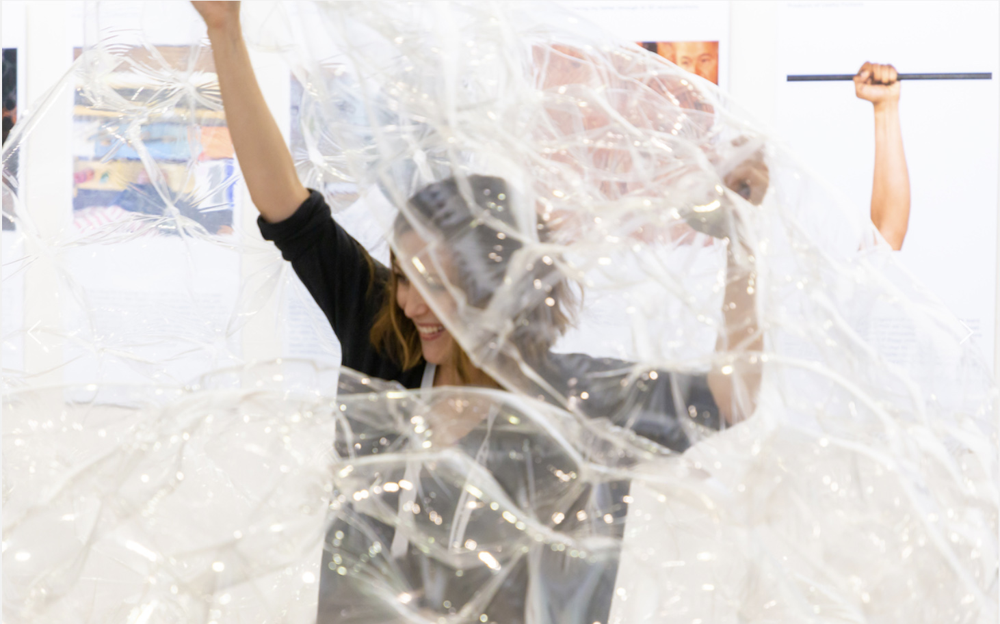
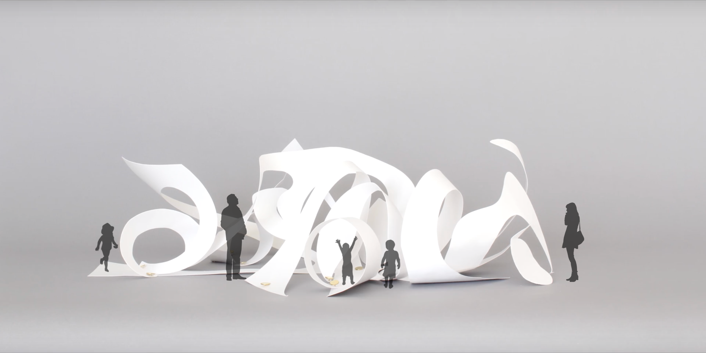
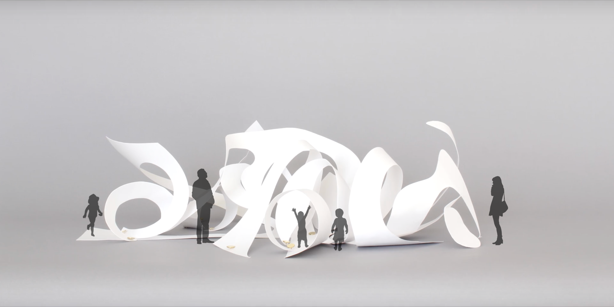

projects
interactive installations and user experience



projects UI&graphics
I will put my self intro here later...
Wenjie Cao
interactive installations and user experience
user interface design and graphic design


interactive installation, 2019, Irvine
Love in the Dialectic of Vanity is an inflatable installation funded by the Andrew W. Mellon Foundation, University of California Humanities Research Institute's Horizons in the Humanities and was exhibited in the 33rd Annual Meeting of the Society for Literature, Science, and the Arts. Read about it
here.
My role includes ideation, prototyping, fabricating small and large scale models, drafting documentation process, searching materials and exhibiting the work.


 

mobile application, 2020, Davis
In the process of rapid urbanization, 58 million young Chinese adults chose to leave their hometown for big cities in pursuit of better job opportunities and living conditions. This population constitutes China’s new Empty-nest Youth. Being new in a big city also means being lonely in a new environment. Sixty eight percent of Empty-nest Youth reported having felt lonely in a week and their loneliness score measured by the UCLA Loneliness Scale is 48 which is much higher than regular Chinese young adults’ score [1]. Meanwhile, loneliness can become chronic and cause many health problems, if people are isolated for a long period of time. This design project presents an explorative research on Empty-nest Youth and loneliness, and creates a mobile application called Parallel City to help people monitor loneliness using the well-known UCLA Loneliness Scale. It promotes virtual interactions between people through story-sharing and game-based cooperation; it also encourages them to use this tool by using a playful reward system.


speculative design & interactive installation, 2019, Davis
In Memory of is a speculative design which explores how technology can help connect the living and the deceased more closely in the future.
interactive design, 2016, China
Mypackage helps people in China track, receive and send their packages more easily, and aims to promote better connection between users and couriers.
interactive design, 2017, China
interactive design, 2015, China
This project attempts to improve the museum viewer's experience through digital display using web page and AR technology.
graphic design, 2018, China
In order to celebrate the opening of the tenth line of Nanjing Metro, I designed this set of commemorative cards. The inspiration comes from Arabic numerals, Chinese characters and the design of Nanjing metro vehicle.
graphic design, 2018, China
These introduction posters were designed based on the different themes of Nanjing Metro station.
user interface design, 2018, China
The intelligent laundry cabinet is mainly put in colleges, communities, apartments, and markets. Its system is the combination of online platform and offline self-service laundry cabinet. This wechat mini program is mainly used for appointment, order, payment, etc. The offline laundry cabinet is equipped with an operation platform for information input, which is used for customers to store and take clothes by themselves.
user interface design, 2018, China
This series of responsive website design is to let KONE China display its new home elevator products. Meanwhile, the website can also provide users with suitable installation plan and quotation according to the information provided by users. In order to achieve efficient management, I also optimized the interface of the background management system.